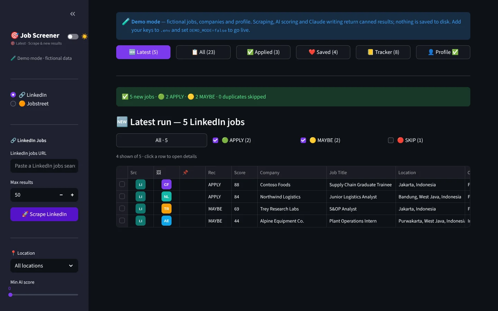
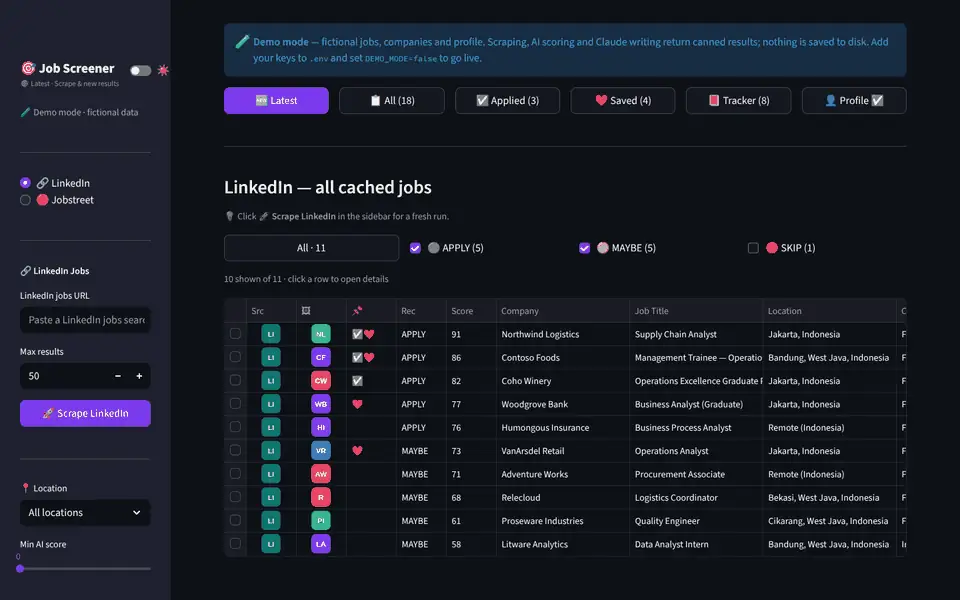
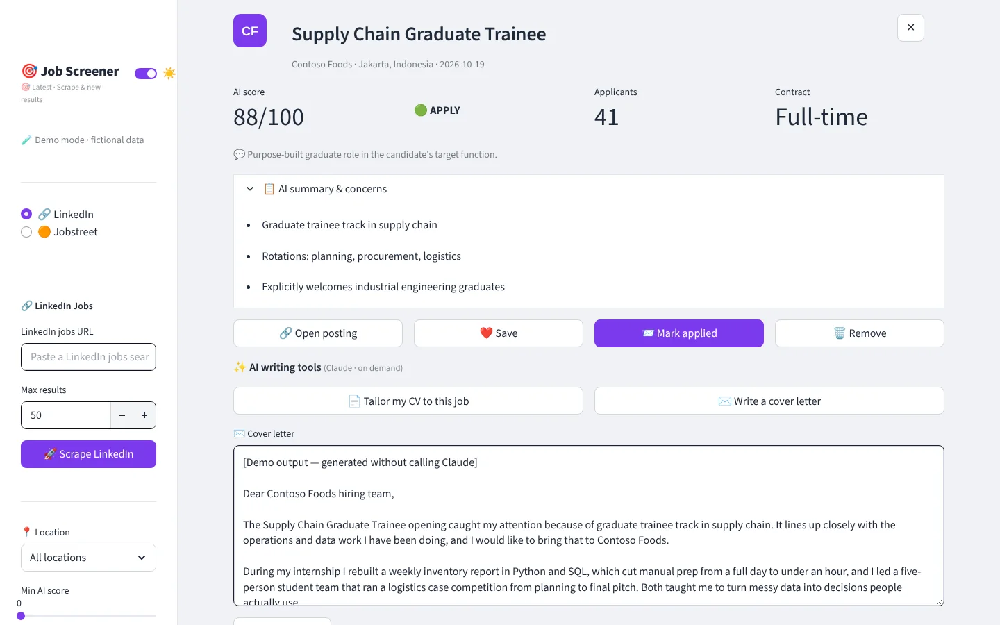
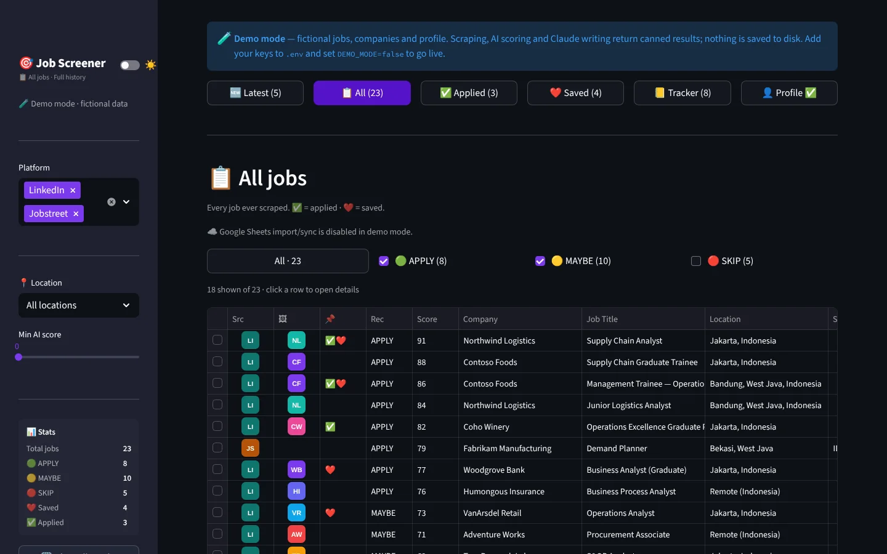
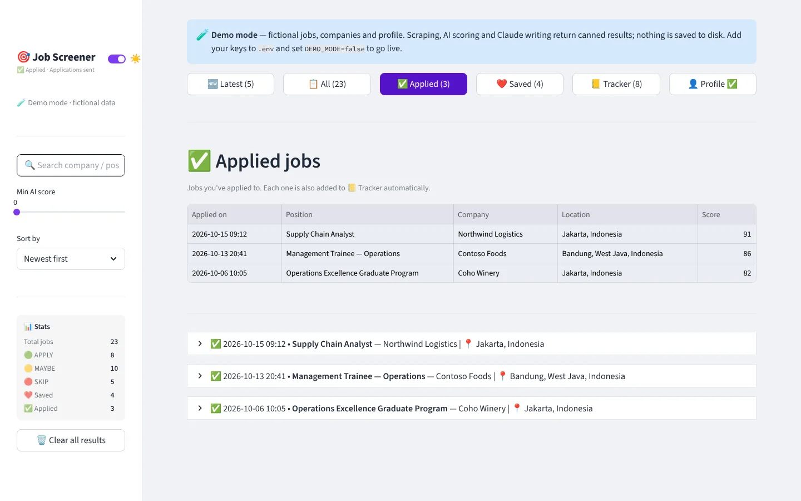
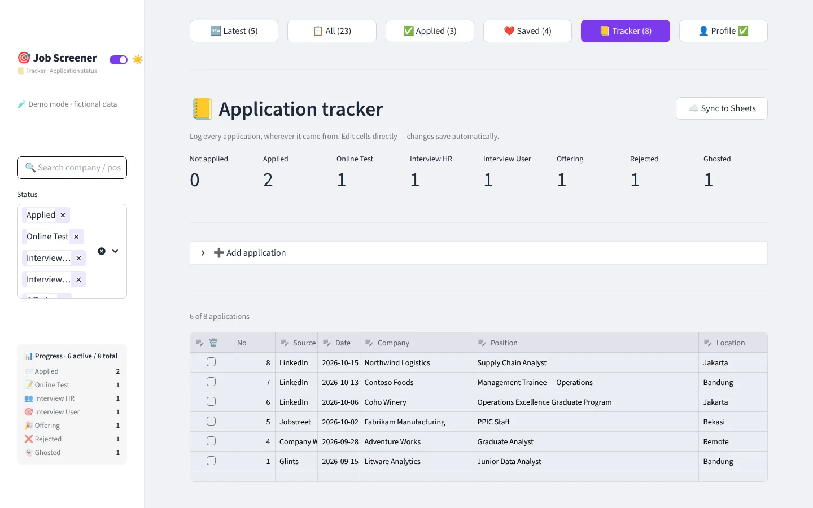
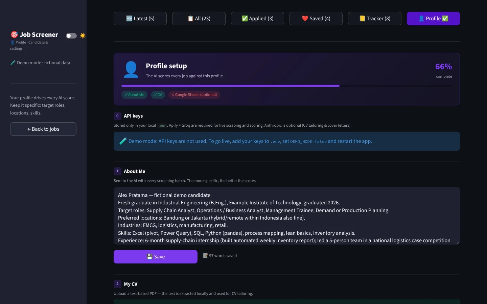

Project 03 · AI tool · Job search · Built with AI
AI Job Screener
A job search assistant. It collects postings from LinkedIn and Jobstreet, scores every one against my profile with AI, and keeps every application in one tracker. I built it in about two weeks for my own job hunt, and it led to an interview.
A job search assistant. It reads the job boards for you, ranks every posting by how well it fits your profile, and keeps every application in one tracker.
Reading every new posting by hand takes hours, and most of them do not fit.
Collects postings from two job boards, scores each from 0 to 100 with AI, labels it Apply, Maybe or Skip, and drafts a cover letter when you ask.
Built in about two weeks and used for my own search. It led to an interview.
I graduated in September 2025 and started looking for work. Checking LinkedIn and Jobstreet every day, then reading posting after posting, took a lot of time, and much of it went to roles that did not fit what I studied or what I wanted.
I had just learned to build with AI on the trading dashboard, so I used the same approach on the search itself: let the tool collect the postings, score them against my profile, and keep the tracker for me. I only read the ones worth reading.
Don't just read about it. Try it.
A limited version of the app runs right here, inside this page, on dummy data. Click to start, or switch to phone view to see the mobile layout.

Press Scrape LinkedIn, or switch to Jobstreet and run it. Watch the collect, deduplicate and score steps.
Click any row to see why it scored that way, what to watch, and the full posting.
Press Mark applied, then open Tracker: the job is logged there and every status can be edited.
The parts that matter.
One format for two job boards
Postings from LinkedIn and Jobstreet come in through Apify and are converted into one job format, with duplicates skipped.
AI scoring in batches
Every new posting gets a score from 0 to 100 in batched AI calls. Apply (75 to 100), Maybe (40 to 74) and Skip (0 to 39) come from fixed bands in the code, not from the model.
Writing on request
For a chosen job it drafts a tailored CV summary or a cover letter with Claude, and the tracker can sync to Google Sheets.
A closer look.






All screens show demo mode with fictional data. Drag, scroll or use the arrows. Click a screen to enlarge.
Designed and directed by me. Code written with AI.
I don't have a coding background. I learned to build by directing AI: I decide what the tool must do, write the specs and the rules, review every change and test it until it works. Claude and other AI tools write the code.
- Specs and rules written before any code
- Every change checked in the browser before it stays
- Secrets, personal data and real accounts removed before publishing
Clean code, no keys inside.
The repository has the code, a README and notes on how it is built. It contains no API keys, accounts or personal data, and it starts in demo mode with dummy data.